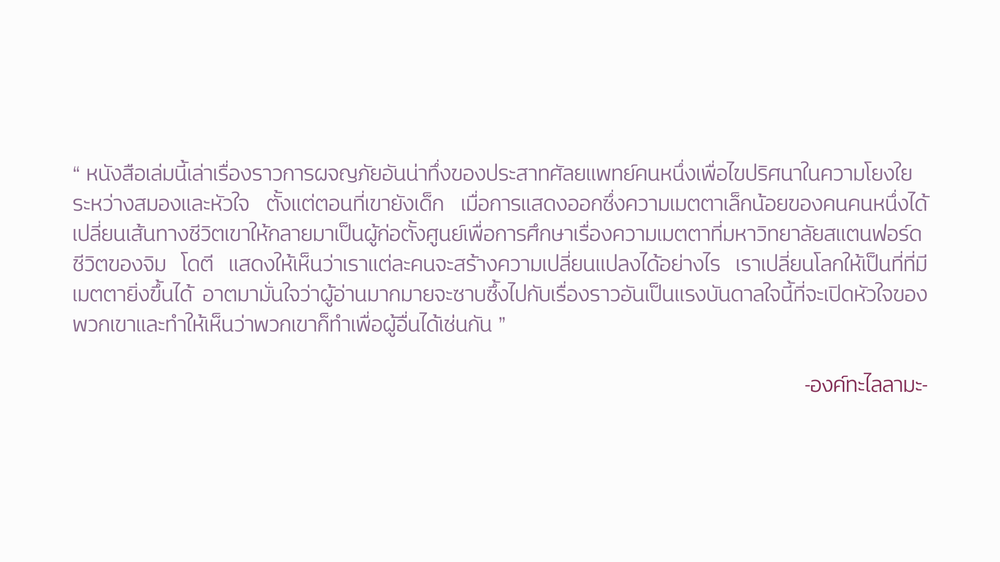

.png)
.png)
.png)
" INTO THE MAGIC SHOP เราทุกคนล้วนมีร้านเวทมนตร์อยู่ในใจ "
เรื่องราวของ ‘จิม โดตี’ เด็กชายที่เติบโตในครอบครัวที่ยากจน พ่อติดเหล้า แม่เป็นโรคซึมเศร้า ในวันหนึ่งที่ชีวิตมืดแปดด้าน เด็กชายจิมในวัย 12 ปี เดินเข้าไปในร้านขายของมายากลแห่งหนึ่งเพื่อซึ้อปลอกนิ้วพลาสติก แต่กลับได้พบกับหญิงคนหนึ่งนามว่า ‘รูธ’ เธอได้สอนเทคนิคการใช้พลังของจิตใจเพื่อก้าวข้ามความเจ็บปวด และดึงดูดสิ่งที่ปรารถนา ความลับนี้ทำให้จิมได้กลายมาเป็นศาสตราจารย์ด้านประสาทศัลยกรรมที่มีชื่อเสียง ผู้ก่อตั้งศูนย์เพื่อการศึกษาด้านความเมตตาและความเห็นแก่ผู้อื่น ของมหาวิทยาลัยสแตนฟอร์ด
ชีวิตวัยเด็ก: เรื่องราวชีวิตที่ต้องต่อสู้กับความยากจนและความรุนแรงในครอบครัว และการพบกันครั้งสำคัญกับ "รูธ" ที่ร้านมายากล
ช่วงวัยรุ่นและวัยผู้ใหญ่: การนำกลวิเศษที่เรียนรู้มาใช้ในการก้าวผ่านความท้าทายในชีวิต การเข้าสู่โรงเรียนแพทย์ และการประสบความสำเร็จอย่างสูงในฐานะศัลยแพทย์
กลับสู่ร้านมายากล: การค้นพบความหมายที่แท้จริงของ "กลวิเศษ" หลังจากที่เคยหลงลืมไปกับความทะเยอทะยานทางโลก และการอุทิศตนเพื่อวิจัยและเผยแพร่พลังของความเมตตา
หนังสือเล่มนี้ไม่ได้สอน “กลมายากล” ที่ใช้หลอกตา แต่เป็น “กลแห่งชีวิต” ที่สอนให้เราควบคุมจิตใจและอารมณ์ของตัวเอง ผ่านการฝึกฝนจาก “รูธ” หญิงชราผู้เปิดประตูสู่โลกแห่งการตระหนักรู้ให้กับ “จิม” เด็กชายผู้เติบโตในครอบครัวยากจน เต็มไปด้วยความทุกข์และความไม่มั่นคงทางใจ
จากบทเรียนเรื่อง “การผ่อนคลายร่างกาย การกล่อมจิตให้นิ่ง การเปิดหัวใจ และการกำหนดจุดมุ่งหมาย” — จิมค่อย ๆ เปลี่ยนชีวิตที่มืดมนให้กลายเป็นเส้นทางของความหวัง เขาพิสูจน์ให้เห็นว่า “เวทมนตร์” ที่แท้จริง คือพลังของความคิดและหัวใจ ที่ทุกคนมีอยู่แล้วในตัวเอง
"เราทุกคนล้วนมีร้านเวทมนตร์อยู่ในใจ" ซึ่งหมายถึงศักยภาพในการเปลี่ยนแปลงชีวิตด้วยการเชื่อมโยงพลังของสมองและหัวใจเข้าด้วยกันผ่านการฝึกฝน
การฝึกสมาธิ (Meditation) และการจินตภาพ (Visualization) ช่วยให้จิตใจสงบ ควบคุมความคิดเชิงลบและดึงดูดเป้าหมายที่ตั้งไว้
รูธสอนบทเรียนสุดท้ายที่สำคัญที่สุด
คือ การเปิดหัวใจ (Open Heart)
ดร. โดตี ค้นพบว่า พลังที่แท้จริงในการสร้างความสุขและความสำเร็จที่ยั่งยืน มาจากการใช้ความสามารถของสมองเพื่อเป้าหมายที่ขับเคลื่อนด้วยหัวใจนั่นคือ การทำสิ่งดี ๆ เพื่อผู้อื่น
แม้ว่าเราจะเลือกจุดเริ่มต้นของชีวิตไม่ได้ แต่เราเลือกที่จะตอบสนองต่อสถานการณ์ต่างๆ และกำหนดทิศทางของอนาคตได้ด้วยพลังแห่งความคิดและหัวใจ
หนังสือสอนให้ตระหนักว่า ความสุขที่แท้จริงไม่ได้อยู่แค่ที่การไล่ล่าความสำเร็จทางวัตถุ แต่คือการใช้ชีวิตด้วยความเมตตาต่อตนเองและผู้อื่น ซึ่งเป็นสิ่งที่ย้อนกลับมาเยียวยาและเติมเต็มชีวิตเราเอง
เรียนรู้ที่จะควบคุมเสียงวิจารณ์ภายใน (Negative Self-Talk) และสร้างพื้นที่แห่งความสงบภายในใจที่คุณสามารถกลับไปเมื่อไหร่ก็ได้ที่ต้องการ เหมือนกับการเดินเข้าสู่ "ร้านมายากล" ที่ซ่อนอยู่ในตัวคุณ
----------------------------------------------------------------
อ้างอิง ข้อมูลการแนะนำหนังสือ : https://www.naiin.com/product/detail/482105
ขอบคุณภาพประกอบ : https://www.flaticon.com
----------------------------------------------------------------